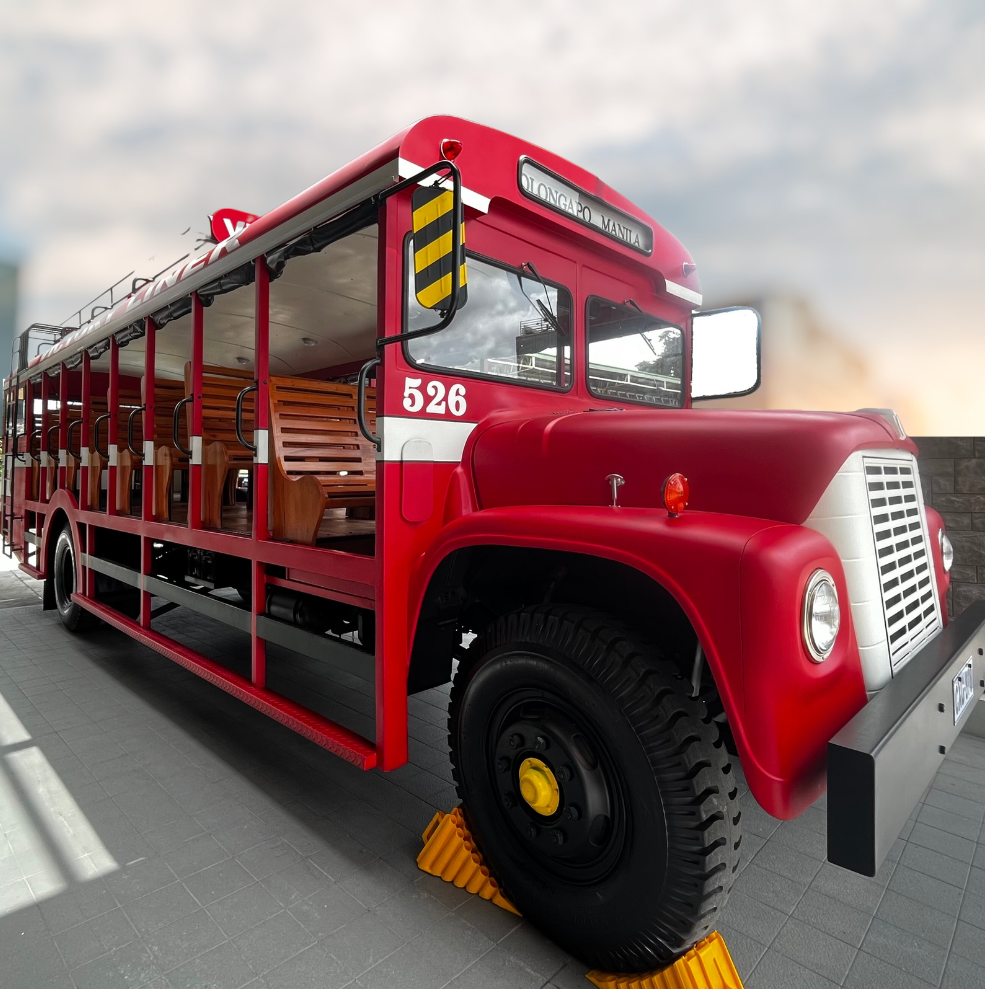

Preserving Heritage and Legacy
The idea to restore this relic from the past initially surfaced during Victory Liner's 75th-anniversary preparations, but the pandemic paused those plans. Now, as normalcy returns, Victory Liner's celebration takes the form of thanksgiving and a nod to their roots.
The restoration of a Jardinera-type bus body on an International Harvester chassis and engine is more than a nostalgic endeavor; it's a testament to their legacy. This historic design, known as a "Toastrack" or "Charabanc," traces back to 19th-century France, and it's a symbol of the company's commitment to honor its roots and culture.
"Legacy is not merely a reflection of where we have been, but a guiding light for where we aim to go. In restoring this vintage bus, Victory Liner exemplifies the transport industry's potential to meld history with innovation, past with future," said VLI Officer. "It is a testament to the enduring vision of a company that seeks not just to serve but to inspire, leaving tire tracks of legacy for generations to come."
